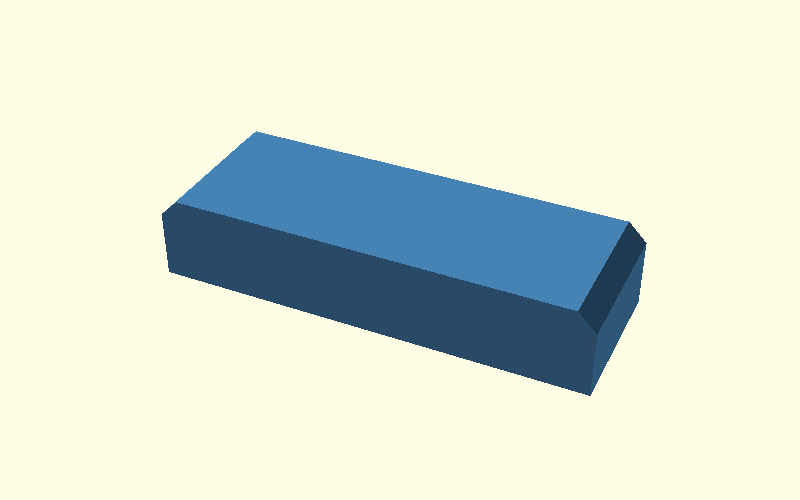
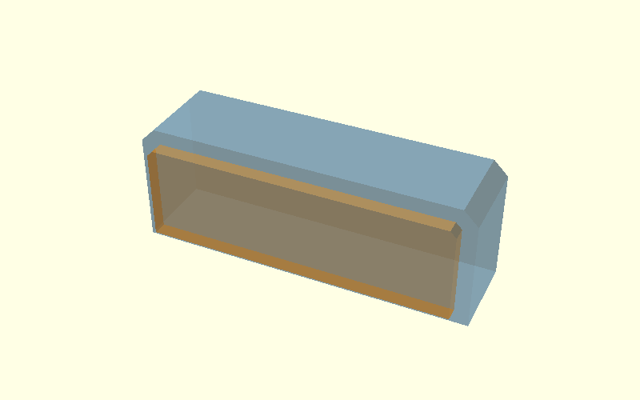
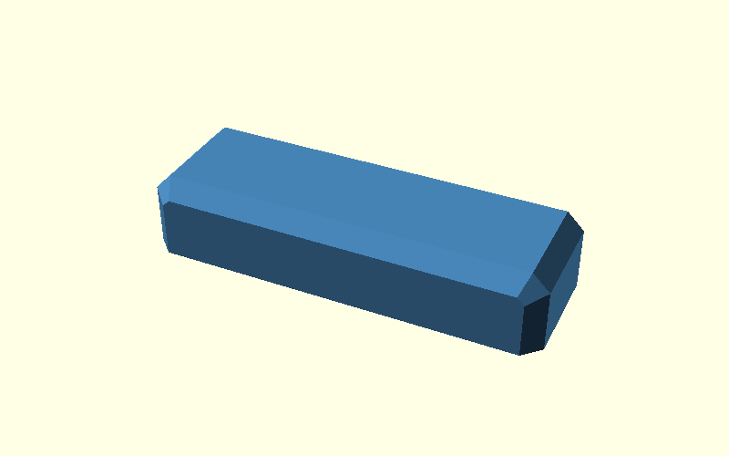
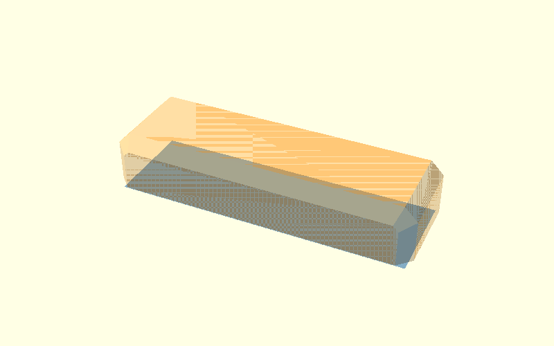
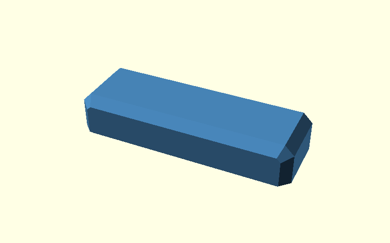

Beam tutorial: chamfer first, then build the elephant-foot hull
Scope: this is a deliberately simple convex beam used to explain the
hull()principle. It is not a replacement implementation for the concave Corner Bracket. The production bracket keeps its existing continuous elephant-foot relief plus the small local arm-tip miter correction.
This version tests one specific idea:
do not feed a square upper block into the elephant-foot hull.
Instead:
- build the normal
cschamfer first; - take that already-chamfered beam above height
ef; - hull it to an
ef-inset bottom footprint.
That means the elephant-foot construction starts from the geometry that already contains the side chamfer.
0. Beam

1. cs: two transparent inputs

Blue and orange are the two objects passed to the normal cs hull.
2. cs: result

This is the already-chamfered beam.
3. ef: two transparent inputs

This is the important change.
- blue: the bottom footprint taken from the already
cs-chamfered body, then inset byef; - orange: the already
cs-chamfered upper body, clipped fromz = efupward.
So neither input is a plain rectangular block anymore. Both already contain
the cs geometry before the elephant-foot hull is made.
4. Hull those two objects

The elephant-foot transition is now created directly from the existing chamfered geometry.
There is no later
openscad
intersection() {
cs_hull();
ef_hull();
}
between two independently built envelopes.
Instead the sequence is:
```openscad hull() { // cs-chamfered bottom footprint, then inset by ef ef_input_bottom();
// cs-chamfered upper body
ef_input_upper_chamfered();
} ```
5. Inspect the meeting corner

This close-up shows why the beam is useful as a teaching case: on this convex
shape the two already-chamfered inputs can be joined directly. The Corner
Bracket is concave and therefore uses the production approach documented in
ef-cs-junction-guide.md,
including the small local correction where cs and ef meet at the arm tips.